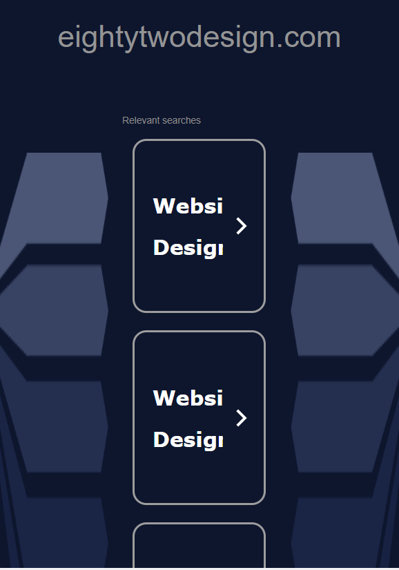
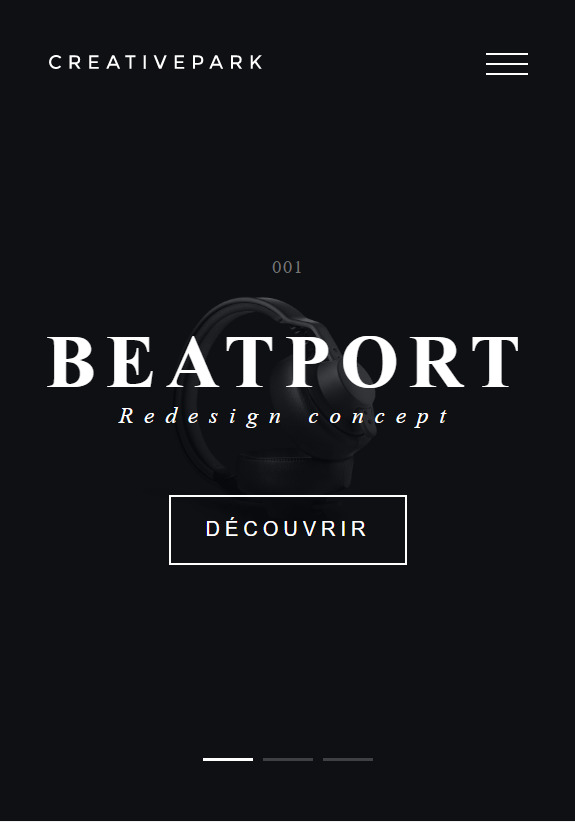
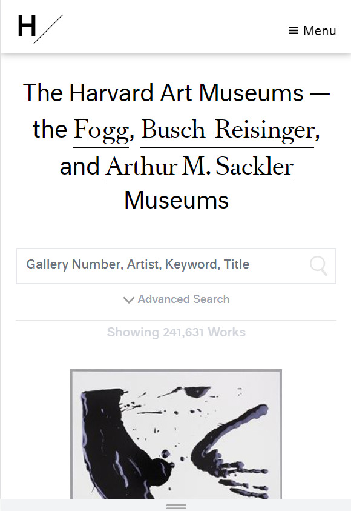

Alignment
EightyTwo
http://www.eightytwodesign.com/ The alignment on this site helps draw the viewer to the center of the screen. By placing the most important items in a single column in the center of the screen, it helps the web designers guide the audiance to where they want them to go. This simple guiding trick is also enhanced by the decortive borders around the central boxes.
Contrast
Creative Park
https://www.creativepark.fr/ There are two aspects that help the contrast on this site: color and size. All the lettering on this site is in plain white, which helps it stand out agaainst the black background. The size of the word "Beatport" also helps to draw the viewer's eye to the most important aspect on the website.
White Space
Harvard Art Museums
https://harvardartmuseums.org/ The whitespace here helps to guide the viewer more than to draw them to the main point of the page. Each section has considerable white space inbetween them. This alllows the viewer to move from one object to another, helping them break down each part of the website into digestiable chunks. It also helps draw the user further down the website.